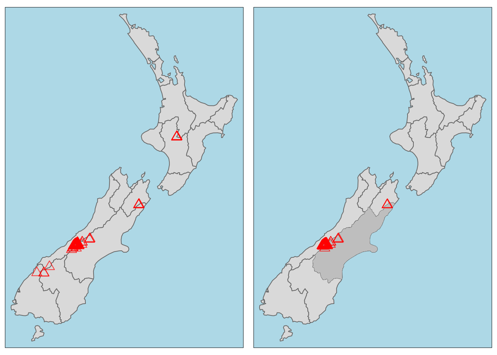
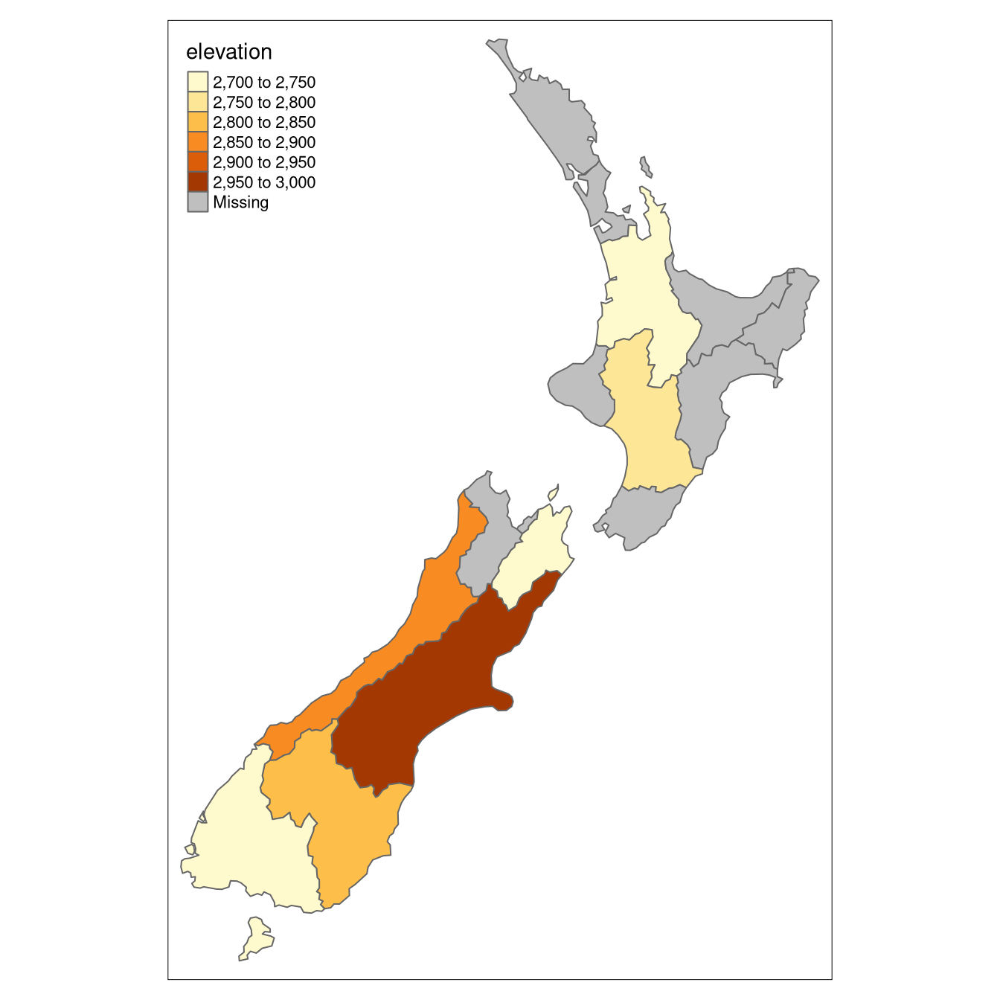
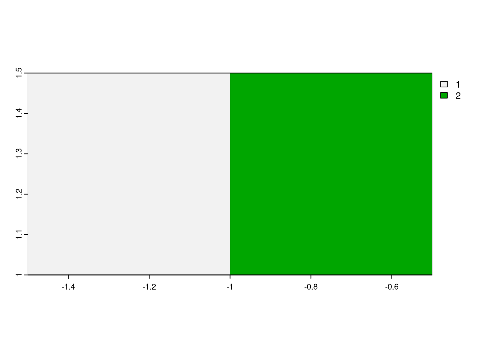

library(sf)
library(terra)
library(dplyr)
library(spData)Operaciones espaciales
Las operaciones espaciales, incluidas las uniones espaciales entre conjuntos de datos vectoriales y las operaciones locales y focales en datos ráster, son una parte vital de la geocomputación. Los objetos espaciales pueden modificarse de múltiples maneras en función de su ubicación y forma. Muchas operaciones espaciales tienen un equivalente no espacial (atributo), por lo que conceptos como el subset y la unión de conjuntos de datos demostrados anteriormente son aplicables aquí.
Sin embargo, las operaciones espaciales difieren de las no espaciales en varios aspectos. Las uniones espaciales, por ejemplo, pueden realizarse de varias formas, incluida la coincidencia de entidades que se cruzan o se encuentran a una cierta distancia del conjunto de datos de destino, mientras que las uniones por atributos sólo pueden realizarse de una forma.
Otro aspecto único de los objetos espaciales es la distancia: todos los objetos espaciales se relacionan a través del espacio, y los cálculos de distancia se pueden utilizar para explorar la fuerza de esta relación (Sección @ref(relaciones-distancia)).
Las operaciones espaciales sobre objetos ráster incluyen el subset o subdivisión y la fusión de varios “mosaicos” ráster en un único objeto. El álgebra de mapas abarca una serie de operaciones que modifican los valores de las celdas ráster, con o sin referencia a los valores de las celdas circundantes. Así, se muestran operaciones de álgebra de mapas locales, focales, zonales y globales.
Note
Es importante tener en cuenta que las operaciones espaciales que utilizan dos objetos espaciales dependen de que ambos objetos tengan el mismo sistema de coordenadas.
Operaciones espaciales sobre datos vectoriales
Esta sección proporciona una visión general de las operaciones espaciales sobre datos geográficos vectoriales sf.
Subdivisión espacial
El subset espacial es el proceso de tomar un objeto espacial y devolver un nuevo objeto que contenga sólo las características que se relacionan en el espacio con otro objeto. De forma análoga al sudset de atributos, pueden crearse subconjuntos de data.frames sf con el operador corchete ([) utilizando la sintaxis x[y, , op = st_intersects], donde x es un objeto sf del que se obtendrá un subconjunto de filas, y es el objeto de subconjunto y , op = st_intersects es un argumento opcional que especifica la relación topológica (también conocida como predicado binario) utilizada para realizar el subconjunto.
La relación topológica por defecto utilizada cuando no se proporciona un argumento op es st_intersects(): el comando x[y, ] es idéntico a x[y, , op = st_intersects] mostrado anteriormente pero no a x[y, , op = st_disjoint] (el significado de estas y otras relaciones topológicas se describe en la siguiente sección).
Para demostrar el subset espacial, utilizaremos los conjuntos de datos nz y nz_height del paquete spData, que contienen datos geográficos sobre las 16 regiones principales y los 101 puntos más altos de Nueva Zelanda, respectivamente (Figura @ref(fig:nz-subset)), en un sistema de coordenadas proyectado. El siguiente fragmento de código crea un objeto que representa Canterbury y, a continuación, utiliza el subset espacial para devolver todos los puntos altos de la región:
canterbury = nz |> filter(Name == "Canterbury")
canterbury_height = nz_height[canterbury, ]
[ subsetting operator (highlighted in gray, right).Al igual que el subset de atributos, el comando x[y, ] (equivalente a nz_height[canterbury, ]) selecciona características de un objeto objetivo x utilizando el contenido de un objeto fuente y. Sin embargo, en lugar de que y sea un vector de clase lógica o entera, para el subset espacial tanto x como y deben ser objetos geográficos, en este caso sf.
Se pueden utilizar varias relaciones topológicas que determinan el tipo de relación espacial pueden ser: toques, cruces o dentro de. El parámetro por defecto st_intersects es una relación topológica tipo ‘catch all’ que devolverá características en el objetivo que toquen, crucen o estén dentro del objeto fuente. Como se ha indicado anteriormente, se pueden especificar operadores espaciales alternativos con el argumento op =, como se demuestra en el siguiente comando que devuelve lo contrario de st_intersects(), puntos que no se intersecan con Canterbury:
nz_height[canterbury, , op = st_disjoint]
Note
Observe que el argumento vacío — denotado con , , — en el trozo de código anterior se incluye para resaltar op, el tercer argumento en [ para objetos sf. Se puede utilizar para cambiar la operación de subset de muchas maneras. nz_height[canterbury, 2, op = st_disjoint], por ejemplo, devuelve las mismas filas pero sólo incluye la segunda columna de atributos (véase sf:::`[.sf` y el ?sf para más detalles).
Unión espacial
La unión de dos conjuntos de datos no espaciales se basa en una variable “clave” compartida o key. La unión de datos espaciales aplica el mismo concepto, pero se basa en las relaciones espaciales. Al igual que con los atributos, la unión añade nuevas columnas al objeto de destino (el argumento x en las funciones de unión), a partir de un objeto de origen (y).
El proceso se ilustra con el siguiente ejemplo: imagine que tiene diez puntos distribuidos aleatoriamente por la superficie de la Tierra y pregunta, para los puntos que están en tierra, ¿en qué países se encuentran?
El punto de partida es crear puntos dispersos aleatoriamente por la superficie terrestre:
set.seed(2018) # set seed for reproducibility
(bb = st_bbox(world)) # the world's bounds xmin ymin xmax ymax
-180.00000 -89.90000 179.99999 83.64513 random_df = data.frame(
x = runif(n = 10, min = bb[1], max = bb[3]),
y = runif(n = 10, min = bb[2], max = bb[4])
)
random_points = random_df |>
st_as_sf(coords = c("x", "y"), crs = "EPSG:4326") # set coordinates and CRSEl escenario ilustrado abajo muestra que el objeto random_points (arriba a la izquierda) carece de datos de atributos, mientras que el world (arriba a la derecha) tiene atributos, incluidos los nombres de los países mostrados para una muestra de países en la leyenda. Las uniones espaciales se implementan con st_join(), como se ilustra en el siguiente fragmento de código. El resultado es el objeto random_joined que se ilustra abajo a la izquierda.

Antes de crear el conjunto de datos unido, utilizamos el subconjunto espacial para crear world_random, que contiene sólo países que contienen puntos aleatorios, para verificar que el número de nombres de países devueltos en el conjunto de datos unido debe ser cuatro.
world_random = world[random_points, ]
nrow(world_random)[1] 4random_joined = st_join(random_points, world["name_long"])Por defecto, st_join() realiza una unión a la izquierda, lo que significa que el resultado es un objeto que contiene todas las filas de x incluyendo las filas que no coinciden con y, pero también puede realizar uniones internas estableciendo el argumento left = FALSE. Al igual que el subset espacial, el operador topológico por defecto utilizado por st_join() es st_intersects(), que puede cambiarse estableciendo el argumento join (véase ?st_join para más detalles). El ejemplo anterior muestra la adición de una columna de una capa de polígonos a una capa de puntos, pero el método funciona independientemente del tipo de geometría. En tales casos, por ejemplo cuando x contiene polígonos, cada uno de los cuales coincide con múltiples objetos en y, las uniones espaciales darán lugar a características duplicadas al crear una nueva fila por cada coincidencia en y.
Uniones no solapadas
A veces, dos conjuntos de datos geográficos no se tocan, pero mantienen una estrecha relación geográfica. Los conjuntos de datos cycle_hire y cycle_hire_osm, ya adjuntos en el paquete spData, constituyen un buen ejemplo. Su representación gráfica muestra que a menudo están estrechamente relacionados pero no se tocan, como se muestra abajo:
plot(st_geometry(cycle_hire), col = "blue")
plot(st_geometry(cycle_hire_osm), add = TRUE, pch = 3, col = "red")Podemos comprobar si algún punto coincide con st_intersects() como se muestra a continuación:
any(st_touches(cycle_hire, cycle_hire_osm, sparse = FALSE))[1] FALSEImaginemos que necesitamos unir la variable capacity de cycle_hire_osm a los datos oficiales target contenidos en cycle_hire. En este caso se necesita una unión no solapada. El método más sencillo es utilizar el predicado binario st_is_within_distance(), como se muestra a continuación utilizando una distancia umbral de 20 m. Se puede establecer la distancia umbral en unidades métricas también para datos no proyectados (por ejemplo, lon/lat CRSs como WGS84), si el motor de geometría esférica (s2) está habilitado, como lo está en sf por defecto.
sel = st_is_within_distance(cycle_hire, cycle_hire_osm,
dist = units::set_units(20, "m"))
summary(lengths(sel) > 0) Mode FALSE TRUE
logical 304 438 Esto muestra que hay 438 puntos en el objeto de destino cycle_hire dentro de la distancia umbral de cycle_hire_osm. ¿Cómo recuperar los valores asociados a los respectivos puntos de cycle_hire_osm? La solución es de nuevo con st_join(), pero añadiendo el argumento dist (fijado en 20 m más abajo):
z = st_join(cycle_hire, cycle_hire_osm, st_is_within_distance,
dist = units::set_units(20, "m"))
nrow(cycle_hire)[1] 742nrow(z)[1] 762Observe que el número de filas del resultado unido es mayor que el objetivo. Esto se debe a que algunas estaciones de alquiler de bicicletas en cycle_hire tienen múltiples coincidencias en cycle_hire_osm. Para agregar los valores de los puntos solapados y devolver la media, podemos utilizar los métodos de agregación aprendidos ates, dando como resultado un objeto con el mismo número de filas que el objetivo:
z = z |>
group_by(id) |>
summarize(capacity = mean(capacity))
nrow(z) == nrow(cycle_hire)[1] TRUELa capacidad de las estaciones cercanas puede verificarse comparando un gráfico de la capacidad de los datos de la fuente cycle_hire_osm con los resultados de este nuevo objeto (gráficos no mostrados):
plot(cycle_hire_osm["capacity"])
plot(z["capacity"])
El resultado de esta unión ha utilizado una operación espacial para cambiar los datos de atributos asociados a sf; la geometría asociada a cada característica ha permanecido inalterada.
Agregación espacial
Al igual que la agregación de datos de atributos, la agregación de datos espaciales condensa los datos: las salidas agregadas tienen menos filas que las entradas no agregadas. Las funciones de agregación estadística, como la media o la suma, resumen múltiples valores de una variable, y devuelven un único valor por variable de agrupación. Ya se demostró cómo aggregate() y group_by() |> summarize() condensan datos basados en variables de atributo, esta sección muestra cómo funcionan las mismas funciones con objetos espaciales.
Volviendo al ejemplo de Nueva Zelanda, imagine que desea averiguar la altura media de los puntos altos de cada región: es la geometría de la fuente (y o nz en este caso) la que define cómo se agrupan los valores en el objeto de destino (x o nz_height). Esto se puede hacer en una sola línea de código con el método aggregate() de R base:
nz_agg = aggregate(x = nz_height, by = nz, FUN = mean)El resultado del comando anterior es un objeto sf con la misma geometría que el objeto de agregación (espacial) (nz), lo que puede comprobar con el comando identical(st_geometry(nz), st_geometry(nz_agg)). El resultado de la operación anterior se ilustra en la figura @ref(fig:spatial-aggregation), que muestra el valor medio de las características en nz_height dentro de cada una de las 16 regiones de Nueva Zelanda. El mismo resultado también puede generarse canalizando la salida de st_join() a las funciones group_by() y summarize() de la siguiente forma:

nz_agg2 = st_join(x = nz, y = nz_height) |>
group_by(Name) |>
summarize(elevation = mean(elevation, na.rm = TRUE))Los objetos nz_agg resultantes tienen la misma geometría que el objeto agregador nz pero con una nueva columna que resume los valores de x en cada región utilizando la función mean(). Se pueden utilizar otras funciones en lugar de mean(), incluyendo median(), sd() y otras funciones que devuelven un único valor por grupo.
Relaciones de distancia
Mientras que las relaciones topológicas son binarias (una característica se cruza con otra o no), las relaciones de distancia son continuas. La distancia entre dos objetos se calcula con la función st_distance(). Esto se ilustra en el siguiente fragmento de código, que encuentra la distancia entre el punto más alto de Nueva Zelanda y el centroide geográfico de la región de Canterbury:
nz_highest = nz_height |> slice_max(n = 1, order_by = elevation)
canterbury_centroid = st_centroid(canterbury)
st_distance(nz_highest, canterbury_centroid)Units: [m]
[,1]
[1,] 115540Hay dos cosas potencialmente sorprendentes en el resultado:
- Tiene “unidades”, lo que nos indica que la distancia es de 100.000 metros, no de 100.000 pulgadas ni de ninguna otra medida de distancia.
- Se devuelve como una matriz, aunque el resultado sólo contenga un valor.
Esta segunda característica indica otra característica útil de st_distance(), su capacidad para devolver matrices de distancia entre todas las combinaciones de características en los objetos x e y. Esto se ilustra en el siguiente comando, que encuentra las distancias entre las tres primeras características de nz_height y las regiones de Otago y Canterbury de Nueva Zelanda representadas por el objeto co.
co = filter(nz, grepl("Canter|Otag", Name))
st_distance(nz_height[1:3, ], co)Units: [m]
[,1] [,2]
[1,] 123537.16 15497.72
[2,] 94282.77 0.00
[3,] 93018.56 0.00Observe que la distancia entre la segunda y tercera características de nz_height y la segunda característica de co es cero. Esto demuestra el hecho de que las distancias entre puntos y polígonos se refieren a la distancia a cualquier parte del polígono: Los puntos segundo y tercero de nz_height están en Otago, lo que puede comprobarse trazándolos:
plot(st_geometry(co)[2])
plot(st_geometry(nz_height)[2:3], add = TRUE)
Operaciones espaciales sobre datos ráster
Esta sección demuestra operaciones ráster más avanzadas y explícitamente espaciales con los objetos elev y grain del paquete spData.
elev = rast(system.file("raster/elev.tif", package = "spData"))
grain = rast(system.file("raster/grain.tif", package = "spData"))Subdivisión espacial
Ya se vio cómo recuperar valores asociados con IDs de celdas específicas o combinaciones de filas y columnas. Los objetos ráster también pueden subdividirse por ubicación (coordenadas) y con otros objetos espaciales. Para utilizar coordenadas para realizar el subset, se pueden “traducir” las coordenadas a un ID de celda con la función terra cellFromXY(). Una alternativa es utilizar terra::extract() para extraer valores. Ambos métodos se demuestran a continuación para encontrar el valor de la celda que cubre un punto situado en las coordenadas (0.1, 0.1).
id = cellFromXY(elev, xy = matrix(c(0.1, 0.1), ncol = 2))
elev[id]| elev |
|---|
| 16 |
# the same as
terra::extract(elev, matrix(c(0.1, 0.1), ncol = 2))| elev |
|---|
| 16 |
Los objetos ráster también se pueden subdividir con otro objeto ráster, como se demuestra en el fragmento de código siguiente:
clip = rast(xmin = 0.9, xmax = 1.8, ymin = -0.45, ymax = 0.45,
resolution = 0.3, vals = rep(1, 9))
elev[clip]| elev |
|---|
| 18 |
| 24 |
# we can also use extract
# terra::extract(elev, ext(clip))Se trata de recuperar los valores del primer objeto raster (en este caso, elev) que se encuentran dentro de la extensión de un segundo raster.
El ejemplo anterior devolvía los valores de celdas específicas, pero en muchos casos se necesitan salidas espaciales. Esto puede hacerse estableciendo el argumento drop del operador [ en FALSE. El siguiente código devuelve las dos primeras celdas de elev, es decir, las dos primeras celdas de la fila superior, como un objeto raster:
elev[1:2, drop = FALSE] # spatial subsetting with cell IDsclass : SpatRaster
dimensions : 1, 2, 1 (nrow, ncol, nlyr)
resolution : 0.5, 0.5 (x, y)
extent : -1.5, -0.5, 1, 1.5 (xmin, xmax, ymin, ymax)
coord. ref. : lon/lat WGS 84 (EPSG:4326)
source(s) : memory
name : elev
min value : 1
max value : 2 
Otro caso de uso común del subset espacial es cuando un ráster con valores lógicos (o NA) se utiliza para enmascarar otro ráster con la misma extensión y resolución. En este caso, pueden utilizarse las funciones [ y mask() (resultados no mostrados):
# create raster mask
rmask = elev
values(rmask) = sample(c(NA, TRUE), 36, replace = TRUE)En el fragmento de código anterior, hemos creado un objeto máscara llamado rmask con valores asignados aleatoriamente a NA y TRUE. A continuación, queremos mantener los valores de elev que son TRUE en rmask. En otras palabras, queremos enmascarar elev con rmask.
# spatial subsetting
elev[rmask, drop = FALSE] # with [ operator
mask(elev, rmask) # with mask()El enfoque anterior también se puede utilizar para sustituir algunos valores (por ejemplo, los que se espera que sean erróneos) por NA.
elev[elev < 20] = NAEstas operaciones son, de hecho, operaciones locales booleanas, ya que comparamos celda por celda dos rásters. En la siguiente subsección se analizan con más detalle estas operaciones y otras relacionadas.
Álgebra de mapas
El término ‘álgebra de mapas’ se acuñó a finales de la década de 1970 para describir un “conjunto de convenciones, capacidades y técnicas” para el análisis de datos geográficos ráster y (aunque con menos prominencia) vectoriales. En este contexto, definimos el álgebra de mapas de forma más restringida, como operaciones que modifican o resumen valores de celdas ráster, con referencia a celdas circundantes, zonas o funciones estadísticas que se aplican a cada celda.
Las operaciones de álgebra de mapas suelen ser rápidas, porque los conjuntos de datos ráster sólo almacenan implícitamente coordenadas. La ubicación de las celdas en los conjuntos de datos ráster puede calcularse utilizando su posición matricial y la resolución y origen del conjunto de datos (almacenados en la cabecera). Para el procesamiento, sin embargo, la posición geográfica de una celda apenas es relevante, siempre y cuando nos aseguremos de que la posición de la celda sigue siendo la misma después del procesamiento. Además, si dos o más conjuntos de datos ráster comparten la misma extensión, proyección y resolución, se podrían tratar como matrices.
Así funciona el álgebra de mapas con el paquete terra. En primer lugar, se consultan las cabeceras de los conjuntos de datos ráster y se comprueba que los conjuntos de datos sean compatibles. En segundo lugar, el álgebra de mapas mantiene la llamada correspondencia de localización uno a uno, lo que significa que las celdas no pueden moverse. Esto difiere del álgebra matricial, en la que los valores cambian de posición, por ejemplo al multiplicar o dividir matrices.
El álgebra de mapas divide las operaciones ráster en cuatro subclases:
- Operaciones locales o por celda
- Operaciones focales o de vecindad. Lo más frecuente es que el valor de la celda de salida sea el resultado de un bloque de celdas de entrada de 3 x 3
- Las operaciones zonales son similares a las operaciones focales, pero la cuadrícula de píxeles circundante sobre la que se calculan los nuevos valores puede tener tamaños y formas irregulares
- Operaciones globales o per-raster. Esto significa que la celda de salida puede derivar su valor de uno o varios rásters completos.
Operaciones locales
Las operaciones locales comprenden todas las operaciones celda por celda en una o varias capas. El álgebra ráster es un caso de uso clásico de las operaciones locales, que incluye la suma o resta de valores de un ráster, el cuadrado y la multiplicación de rásters. El álgebra raster también permite realizar operaciones lógicas, como encontrar todas las celdas que superen un valor determinado. El paquete terra admite todas estas operaciones y más, como se muestra a continuación:
elev + elev
elev^2
log(elev)
elev > 5Otro buen ejemplo de operaciones locales es la clasificación de intervalos de valores numéricos en grupos, como la agrupación de un modelo digital de elevación en elevaciones bajas (clase 1), medias (clase 2) y altas (clase 3). Para utilizar el comando classify(), necesitamos primero construir una matriz de reclasificación, donde la primera columna corresponde al extremo inferior y la segunda columna al extremo superior de la clase. La tercera columna representa el nuevo valor para los rangos especificados en las columnas uno y dos.
rcl = matrix(c(0, 12, 1, 12, 24, 2, 24, 36, 3), ncol = 3, byrow = TRUE)
rcl [,1] [,2] [,3]
[1,] 0 12 1
[2,] 12 24 2
[3,] 24 36 3Aquí, los valores ráster en los rangos 0–12, 12–24 y 24–36 se reclasifican para tomar los valores 1, 2 y 3, respectivamente.
recl = classify(elev, rcl = rcl)La función classify() también puede utilizarse cuando queremos reducir el número de clases en nuestros rásters categóricos.
Además de los operadores aritméticos, también se pueden utilizar las funciones app(), tapp() y lapp(). Son más eficientes, por lo que son preferibles en presencia de grandes conjuntos de datos ráster. Además, permiten guardar directamente un archivo de salida. La función app() aplica una función a cada celda de un raster y se utiliza para resumir (por ejemplo, calculando la suma) los valores de múltiples capas en una sola capa. La función tapp() es una extensión de app() que nos permite seleccionar un subconjunto de capas (véase el argumento index) para las que queremos realizar una determinada operación. Por último, la función lapp() permite aplicar una función a cada celda utilizando las capas como argumentos – a continuación se presenta una aplicación de lapp().
El cálculo del índice de vegetación de diferencia normalizada (NDVI) es una conocida operación de raster local (píxel a píxel). Devuelve un raster con valores entre -1 y 1; los valores positivos indican la presencia de plantas vivas (en su mayoría > 0.2). El NDVI se calcula a partir de las bandas roja e infrarroja cercana (NIR) de imágenes satelitales.
\[ \begin{split} NDVI&= \frac{\text{NIR} - \text{Red}}{\text{NIR} + \text{Red}}\\ \end{split} \]
Calculemos el NDVI para el archivo de satélite multiespectral del Parque Nacional de Zion.
multi_raster_file = system.file("raster/landsat.tif", package = "spDataLarge")
multi_rast = rast(multi_raster_file)El objeto raster tiene cuatro bandas de satélite: azul, verde, rojo e infrarrojo cercano (NIR). Nuestro siguiente paso será implementar la fórmula NDVI en una función de R:
ndvi_fun = function(nir, red){
(nir - red) / (nir + red)
}Esta función acepta dos argumentos numéricos, nir y red, y devuelve un vector numérico con valores NDVI. Puede utilizarse como argumento fun de lapp(). Sólo tenemos que recordar que nuestra función sólo necesita dos bandas (no cuatro de la trama original), y tienen que estar en el orden NIR, rojo. Por eso, antes de hacer los cálculos, se hace un subconjunto del raster de entrada con multi_rast[[c(4, 3)]].
ndvi_rast = lapp(multi_rast[[c(4, 3)]], fun = ndvi_fun)
plot(ndvi_rast)
La cartografía predictiva es otra aplicación interesante de las operaciones raster locales. La variable de respuesta corresponde a puntos medidos u observados en el espacio, por ejemplo, la riqueza de especies, la presencia de corrimientos de tierras, la enfermedad de los árboles o el rendimiento de los cultivos. Por consiguiente, podemos recuperar fácilmente variables predictoras espaciales o aéreas a partir de diversos rásters (elevación, pH, precipitaciones, temperatura, cubierta vegetal, clase de suelo, etc.). A continuación, modelizamos nuestra respuesta en función de nuestros predictores mediante lm(), glm(), gam() o una técnica de aprendizaje automático. Por tanto, las predicciones espaciales sobre objetos ráster pueden realizarse aplicando coeficientes estimados a los valores ráster predictores y sumando los valores ráster de salida.
Operaciones focales
Mientras que las funciones locales operan sobre una celda, aunque posiblemente de varias capas, las operaciones focales tienen en cuenta una celda central (focal) y sus vecinas. El vecindario (también denominado núcleo, filtro o ventana móvil) considerado suele tener un tamaño de 3 por 3 celdas (es decir, la celda central y sus ocho vecinas circundantes), pero puede adoptar cualquier otra forma (no necesariamente rectangular) definida por el usuario. Una operación focal aplica una función de agregación a todas las celdas dentro del vecindario especificado, utiliza el resultado correspondiente como nuevo valor para la celda central y pasa a la siguiente celda central. Otros nombres para esta operación son filtrado espacial y convolución.

En R, podemos utilizar la función focal() para realizar el filtrado espacial. Definimos la forma de la ventana móvil con una “matriz” cuyos valores corresponden a los pesos (véase el parámetro “w” en el fragmento de código siguiente). En segundo lugar, el parámetro fun nos permite especificar la función que deseamos aplicar a este vecindario. Aquí, elegimos el mínimo, pero cualquier otra función de resumen, incluyendo sum(), mean(), o var() se puede utilizar.
r_focal = focal(elev, w = matrix(1, nrow = 3, ncol = 3), fun = min)Esta función también acepta argumentos adicionales, por ejemplo, si debe eliminar los NA en el proceso (na.rm = TRUE) o no (na.rm = FALSE).
Operaciones zonales
Al igual que las operaciones focales, las operaciones zonales aplican una función de agregación a múltiples celdas de trama. Sin embargo, un segundo ráster, normalmente con valores categóricos, define los filtros zonales (o “zonas”), a diferencia de una ventana de vecindad predefinida en el caso de la operación focal presentada en la sección anterior. Por consiguiente, las celdas del ráster que definen el filtro zonal no tienen por qué ser necesariamente vecinas. Nuestro ráster de tamaño de grano es un buen ejemplo: los diferentes tamaños de grano están repartidos irregularmente por todo el ráster. Por último, el resultado de una operación zonal es una tabla resumen agrupada por zonas, razón por la cual esta operación también se conoce como estadística zonal en el mundo SIG. Esto contrasta con las operaciones focales que devuelven un objeto raster.
El siguiente fragmento de código utiliza la función zonal() para calcular la elevación media asociada a cada clase de tamaño de grano, por ejemplo.
z = zonal(elev, grain, fun = "mean")
z| grain | elev |
|---|---|
| clay | 14.80000 |
| silt | 21.15385 |
| sand | 18.69231 |
Nota: también es posible obtener un raster con estadísticas calculadas para cada zona estableciendo el argumento as.raster a TRUE.
Operaciones globales
Las operaciones globales son un caso especial de las operaciones zonales, en las que todo el conjunto de datos ráster representa una única zona. Las operaciones globales más comunes son las estadísticas descriptivas para todo el conjunto de datos ráster.
Fusión de rásters
Supongamos que queremos calcular el NDVI, y además queremos calcular atributos del terreno a partir de datos de elevación para observaciones dentro de un área de estudio. Estos cálculos se basan en información obtenida por teledetección. Las imágenes correspondientes suelen dividirse en escenas que cubren una extensión espacial específica y, con frecuencia, un área de estudio abarca más de una escena. Entonces, tendríamos que fusionar las escenas cubiertas por nuestra zona de estudio. En el caso más sencillo, basta con fusionar las escenas, es decir, ponerlas una al lado de la otra. Esto es posible, por ejemplo, con datos digitales de elevación (SRTM, ASTER). En el siguiente fragmento de código descargamos primero los datos de elevación SRTM de Austria y Suiza (para los códigos de país, véase la función geodata country_codes()). En un segundo paso, fusionamos los dos rásters en uno.
aut = geodata::elevation_30s(country = "AUT", path = tempdir())
ch = geodata::elevation_30s(country = "CHE", path = tempdir())
aut_ch = merge(aut, ch)El comando merge() de terra combina dos imágenes y, en caso de que se solapen, utiliza el valor de la primera trama.